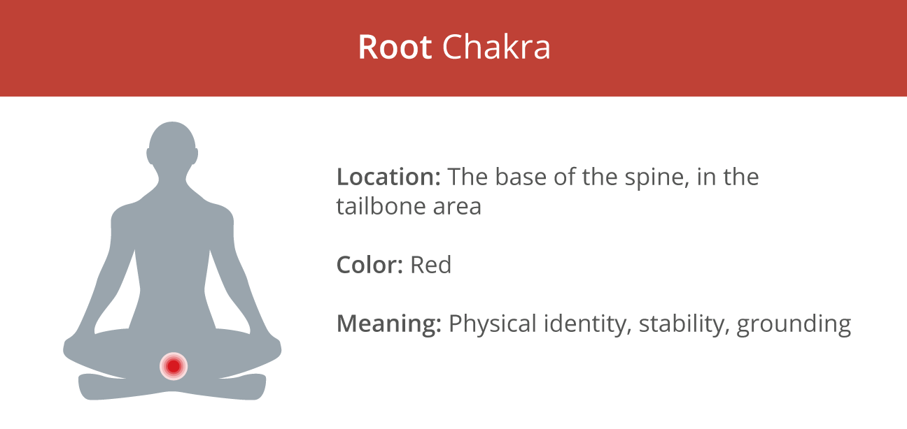

Root Chakra

Image from https://www.healthline.com/health/fitness-exercise/7-chakras
The root chakra, located at the base of the spine, is associated with energy, survival, stability, comfort, and safety.
The main colour of the root chakra is red, but a few black crystals also match its energetic frequency:
1. Red Jasper
Image from https://rainbowbizhippyshop.org.uk/product/crystals-tumblestones-red-jasper/
Assists in:
- Self-confidence
- Self-trust
- Courage
- Grounding
- Stability
- Energy flow
A stone of stability, Red Jasper provides us with comfort, security, strength and balance.
It also helps us reconnect with the Earth's grounding energies.
2. Carnelian
Image from https://www.thebluebudha.com.au/shop/carnelian-gemstone-tumbled/
Assists in:
- Courage
- Motivation
- Strength
- Self-confidence
- Overcoming past traumas
- Vitality
- Balancing energy
Made of beautiful red and orange hues, Carnelian helps us overcome our deepest fears, and increase our courage and strength.
It also allows us to overcome procrastination and boost our level of self-confidence.
3. Black Obsidian
Image from https://www.peaceful-island.com/insights-by-peaceful-island/black-obsidian-the-bodyguard-of-the-soul-meaning-properties-powers
Assists in:
- Protection
- Energy flow
- Courage
- Self-confidence
- Decision-making
- Clarity
- Grounding
A powerful cleansing stone, Black Obsidian has amazing grounding and protective properties.
It also allows us to release any negative emotions such as fear, stress and anger.
[Information adapted from https://7chakrastore.com/blogs/news/chakra-stones]